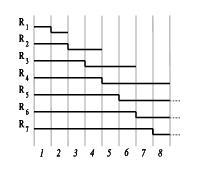

It can
be proved that
ranklets
constitute a complete set
of rank features.
The image to the left represents a
complete set
of ranklets for a
one-dimensional, eight-pixel image. The notation is in analogy with
Haar wavelets: the upper part of each step represents the
T set,
with the lower part corresponding to the
C set. The dashed line
indicates
"infinity padding", in which we deal
with the border conditions by assuming that the missing pixels have an
infinite value.
A detailed treatment of complete sets of ranklets in one and two
dimensions can be found in this
research
report.